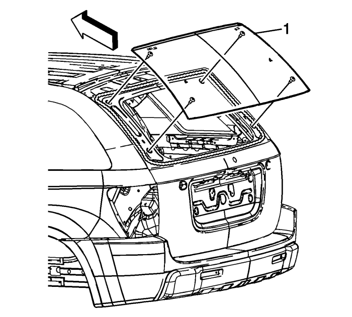

Advertencia: Consulte Advertencia, ventana agrietada en la sección Prólogo.
Nota: Antes de cortar una ventanilla fija, aplique una capa doble de cinta adhesiva protectora alrededor del perímetro de las superficies pintadas y del revestimiento interior.
- Abra el portón trasero.
- Retire el revestimiento del portón trasero. Consultar Sustitución del panel de revestimiento del portón trasero : Carrocería larga → Carrocería corta .
- Desemborne los conectores eléctricos de la barra conductora del desempañador de la luneta del portón trasero.
- Retirar el brazo del limpialuneta trasero. Consultar Sustitución del brazo del limpialuneta trasero : Carrocería larga .
- Desmonte la moldura superior del portón trasero. Consultar Sustitución de la moldura superior del portón trasero : Carrocería corta → Carrocería larga .
Advertencia: Consulte Advertencia sobre salida de descongelación en la sección Prólogo.
- Cubra las siguientes zonas para protegerlas de los fragmentos de los cristales rotos:
| • | Acolchado del tablero de instrumentos superior |
| • | Salidas de descongelación y salidas del A/A |
Advertencia: Consulte Advertencia de manejo de vidrio y chapa en la sección Prólogo.

- Con un cuchillo, corte con cuidado el cordón (1) de los laterales y del borde superior de la ventanilla para acceder al cordón de pegamento de uretano, si procede.

Nota: Mantenga el extremo de corte de la herramienta pegado a la ventanilla.
- Retire la ventanilla del pegamento de uretano.
| • | Deje una base de uretano de unos 2 mm (0,078 pulg.) aproximadamente en el reborde a fijar-soldar. |
| • | La única lubricación adecuada es agua limpia. |
| • | Extractor de sellador para cristales BO-24402-A (cuchillo frío). |
| • | Herramienta de desmontaje de cristales fijos BO-39032, o equivalente, para retirar la ventanilla. |
Nota: Mantenga el extremo de corte de la herramienta/cuchillo pegado a la ventanilla. Realice este procedimiento desde el interior del vehículo.
- Si es necesario, utilice un cuchillo largo, o una herramienta similar, para retirar las esquinas inferiores de la ventanilla del pegamento de uretano.

- Con ayuda de un asistente, retire la ventanilla (1) del vehículo.